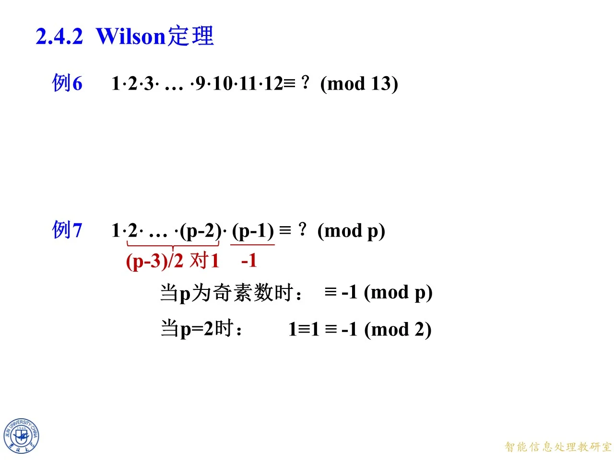
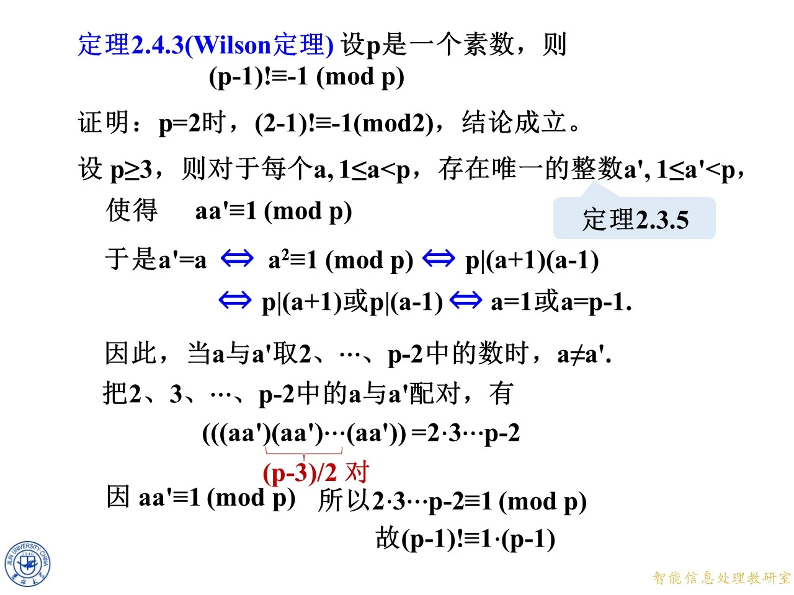
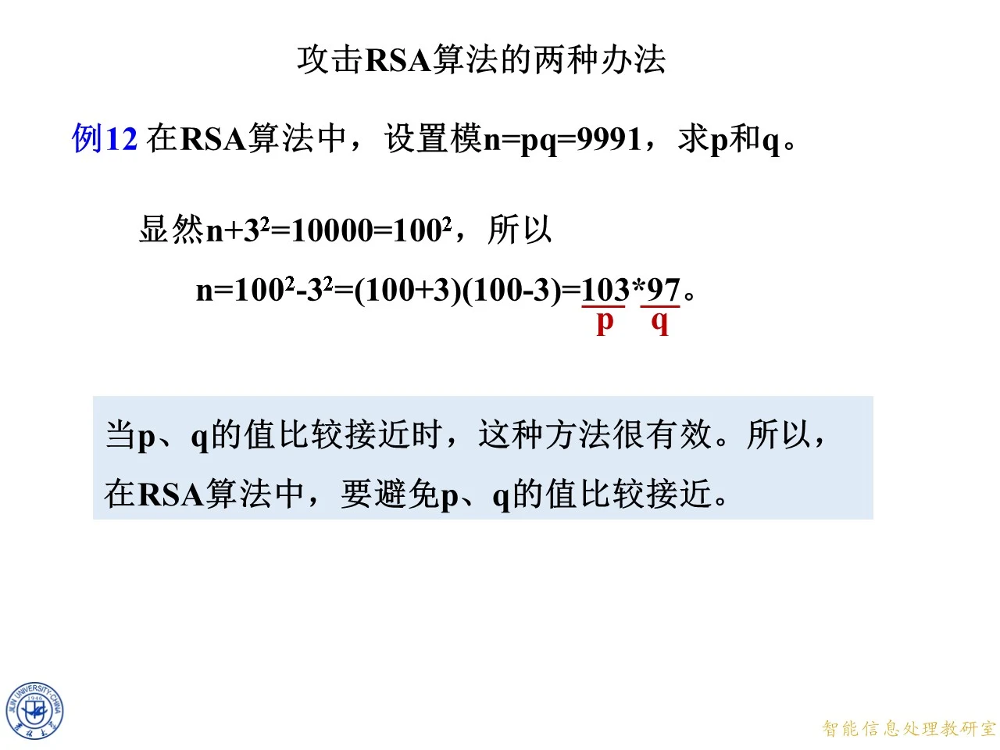

上一节把欧拉函数的取值和性质都算清了，这一节转到同一章里最硬的一条同余式：素数模下的阶乘。Wilson 定理只说了一句话——素数模下，从一一直乘到“模减一”的那个阶乘，余数必定同余于负一。它的证法极有代表性：把所有非零剩余按逆元两两配对，配不上的只剩头尾两个。这条定理与前面关于逆元存在唯一的结论、与中国剩余定理都直接相关，后面判断合数、攻击 RSA 的例子还会回来用它。
例6 与例7：两个阶乘同余的引子
◆ p.465-466 ｜2.4.2 Wilson 定理开篇（另录 p.106-107）
本页只摆两个问题，不给答案，先把“阶乘取模”这件事端上桌：
例6 1 ⋅ 2 ⋅ 3 ⋯ 9 ⋅ 10 ⋅ 11 ⋅ 12 ≡ ? ( m o d 13 ) 1\cdot2\cdot3\cdots9\cdot10\cdot11\cdot12\equiv?\pmod{13} 1 ⋅ 2 ⋅ 3 ⋯ 9 ⋅ 10 ⋅ 11 ⋅ 12 ≡ ? ( mod 13 )
例7 1 ⋅ 2 ⋯ ( p − 2 ) ⋅ ( p − 1 ) ≡ ? ( m o d p ) 1\cdot2\cdots(p-2)\cdot(p-1)\equiv?\pmod p 1 ⋅ 2 ⋯ ( p − 2 ) ⋅ ( p − 1 ) ≡ ? ( mod p ) p p p
两题的形状相同：都是从 1 1 1 13 13 13 p p p 先算具体的、再猜一般的 ，这是数论里常见的推进顺序，本课正是这个节奏。
看例6 的模 13 13 13 12 12 12 12 ! 12! 12 ! 12 ! 12! 12 ! 1 1 1 0 0 0
例7 的写法也有讲究：为什么要求 p p p 奇素数 ？因为 p = 2 p=2 p = 2 p − 2 = 0 p-2=0 p − 2 = 0 0 0 0 1 1 1 p − 1 p-1 p − 1 p = 2 p=2 p = 2 1 = p − 1 1=p-1 1 = p − 1 p p p p = 2 p=2 p = 2
◆ p.467-471 ｜例7 的答案先亮出来（另录 p.108-112）
这一组是同一个页面逐帧补内容，最后定型为：
当 p p p 1 ⋅ 2 ⋯ ( p − 2 ) ⋅ ( p − 1 ) ≡ − 1 ( m o d p ) 1\cdot2\cdots(p-2)\cdot(p-1)\equiv-1\pmod p 1 ⋅ 2 ⋯ ( p − 2 ) ⋅ ( p − 1 ) ≡ − 1 ( mod p )
当 p = 2 p=2 p = 2 1 ≡ 1 ≡ − 1 ( m o d 2 ) 1\equiv1\equiv-1\pmod 2 1 ≡ 1 ≡ − 1 ( mod 2 )
页面上还用红色标了两处提示：连乘号下方写着“( p − 3 ) / 2 (p-3)/2 ( p − 3 ) /2 ( p − 1 ) (p-1) ( p − 1 ) − 1 -1 − 1 p − 2 p-2 p − 2 ( p − 3 ) / 2 (p-3)/2 ( p − 3 ) /2 1 1 1 ( p − 1 ) (p-1) ( p − 1 ) p p p − 1 -1 − 1
为什么是 ( p − 3 ) / 2 (p-3)/2 ( p − 3 ) /2 2 , 3 , … , p − 2 2,3,\ldots,p-2 2 , 3 , … , p − 2 p − 3 p-3 p − 3 ( p − 3 ) / 2 (p-3)/2 ( p − 3 ) /2 p p p p p p p − 3 p-3 p − 3
p = 2 p=2 p = 2 ( p − 1 ) ! = ( 2 − 1 ) ! = 1 ! = 1 (p-1)!=(2-1)!=1! = 1 ( p − 1 )! = ( 2 − 1 )! = 1 ! = 1 − 1 ≡ 1 ( m o d 2 ) -1\equiv1\pmod 2 − 1 ≡ 1 ( mod 2 ) 1 ≡ − 1 ( m o d 2 ) 1\equiv-1\pmod 2 1 ≡ − 1 ( mod 2 ) 1 ≡ − 1 ( m o d 2 ) 1\equiv-1\pmod 2 1 ≡ − 1 ( mod 2 ) 2 2 2 1 1 1 − 1 -1 − 1
拓展 （课件外补充）：这里其实已经能猜出 Wilson 定理的最终形态了。例7 的答案就是 ( p − 1 ) ! ≡ − 1 ( m o d p ) (p-1)!\equiv-1\pmod p ( p − 1 )! ≡ − 1 ( mod p )

课件原图 · 9月18日授课 · 第 471 页 查看前后已收录原页 → Wilson 定理 2.4.3
◆ p.472-475 ｜定理陈述与完整证明（另录 p.113-116）
p.472 先问“设 p p p ( p − 1 ) ! ≡ ? ( m o d p ) (p-1)!\equiv?\pmod p ( p − 1 )! ≡ ? ( mod p ) − 1 -1 − 1
定理 2.4.3（Wilson 定理）设 p p p ( p − 1 ) ! ≡ − 1 ( m o d p ) (p-1)!\equiv-1\pmod p ( p − 1 )! ≡ − 1 ( mod p )
p.475 是完整证明，共五个环节，逐环节说清。
第一，处理 p = 2 p=2 p = 2 ( 2 − 1 ) ! = 1 ! = 1 ≡ − 1 ( m o d 2 ) (2-1)!=1! =1\equiv-1\pmod 2 ( 2 − 1 )! = 1 ! = 1 ≡ − 1 ( mod 2 ) p ≥ 3 p\ge3 p ≥ 3 p = 2 p=2 p = 2 1 1 1 p − 1 p-1 p − 1
第二，设 p ≥ 3 p\ge3 p ≥ 3 a a a 即对每个满足 1 ≤ a < p 1\le a<p 1 ≤ a < p a a a a ′ a' a ′ 1 ≤ a ′ < p 1\le a'<p 1 ≤ a ′ < p
a a ′ ≡ 1 ( m o d p ) . aa'\equiv1\pmod p. a a ′ ≡ 1 ( mod p ) .
这一步用的是定理 2.3.5 （课件右侧用浅蓝方框标出）。为什么成立？因为 ( a , p ) = 1 (a,p)=1 ( a , p ) = 1 p p p 1 ≤ a < p 1\le a<p 1 ≤ a < p p ∤ a p\nmid a p ∤ a a a a p p p p p p 1 1 1 p − 1 p-1 p − 1
第三，找出“自己就是自己逆元”的那些 a a a 令 a ′ = a a'=a a ′ = a a 2 ≡ 1 ( m o d p ) a^2\equiv1\pmod p a 2 ≡ 1 ( mod p )
a ′ = a ⟺ a 2 ≡ 1 ( m o d p ) ⟺ p ∣ ( a 2 − 1 ) ⟺ p ∣ ( a + 1 ) ( a − 1 ) . a'=a\iff a^2\equiv1\pmod p\iff p\mid(a^2-1)\iff p\mid(a+1)(a-1). a ′ = a ⟺ a 2 ≡ 1 ( mod p ) ⟺ p ∣ ( a 2 − 1 ) ⟺ p ∣ ( a + 1 ) ( a − 1 ) .
再往下：p p p p ∣ ( a + 1 ) ( a − 1 ) p\mid(a+1)(a-1) p ∣ ( a + 1 ) ( a − 1 ) p ∣ a + 1 p\mid a+1 p ∣ a + 1 p ∣ a − 1 p\mid a-1 p ∣ a − 1 a ≡ − 1 a\equiv-1 a ≡ − 1 a ≡ 1 ( m o d p ) a\equiv1\pmod p a ≡ 1 ( mod p ) 1 ≤ a < p 1\le a<p 1 ≤ a < p a = 1 a=1 a = 1 a = p − 1 a=p-1 a = p − 1
这一步是整条证明的灵魂。若不是素数模，p ∣ ( a + 1 ) ( a − 1 ) p\mid(a+1)(a-1) p ∣ ( a + 1 ) ( a − 1 ) 8 8 8 1 , 3 , 5 , 7 1,3,5,7 1 , 3 , 5 , 7 a 2 ≡ 1 ( m o d 8 ) a^2\equiv1\pmod 8 a 2 ≡ 1 ( mod 8 )
第四，把 2 , 3 , … , p − 2 2,3,\ldots,p-2 2 , 3 , … , p − 2 由第三步，当 a , a ′ a,a' a , a ′ 2 , 3 , … , p − 2 2,3,\ldots,p-2 2 , 3 , … , p − 2 a ≠ a ′ a\ne a' a = a ′ 1 1 1 p − 1 p-1 p − 1 a ↦ a ′ a\mapsto a' a ↦ a ′ ( p − 3 ) / 2 (p-3)/2 ( p − 3 ) /2 { a , a ′ } \{a,a'\} { a , a ′ } a a ′ ≡ 1 ( m o d p ) aa'\equiv1\pmod p a a ′ ≡ 1 ( mod p )
第五，把两边的乘积对上。 把每个二元组里的两个数乘起来：
( a a ′ ) ( a a ′ ) ⋯ ( a a ′ ) = 2 ⋅ 3 ⋯ ( p − 2 ) . (aa')(aa')\cdots(aa')=2\cdot3\cdots(p-2). ( a a ′ ) ( a a ′ ) ⋯ ( a a ′ ) = 2 ⋅ 3 ⋯ ( p − 2 ) .
左端每一对都同余于 1 1 1 ≡ 1 ( m o d p ) \equiv1\pmod p ≡ 1 ( mod p ) 2 2 2 p − 2 p-2 p − 2
2 ⋅ 3 ⋯ ( p − 2 ) ≡ 1 ( m o d p ) . 2\cdot3\cdots(p-2)\equiv1\pmod p. 2 ⋅ 3 ⋯ ( p − 2 ) ≡ 1 ( mod p ) .
最后补上两头：
( p − 1 ) ! = 1 ⋅ 2 ⋅ 3 ⋯ ( p − 2 ) ⋅ ( p − 1 ) ≡ 1 ⋅ 1 ⋅ ( p − 1 ) ≡ − 1 ( m o d p ) . (p-1)!=1\cdot2\cdot3\cdots(p-2)\cdot(p-1)\equiv1\cdot1\cdot(p-1)\equiv-1\pmod p. ( p − 1 )! = 1 ⋅ 2 ⋅ 3 ⋯ ( p − 2 ) ⋅ ( p − 1 ) ≡ 1 ⋅ 1 ⋅ ( p − 1 ) ≡ − 1 ( mod p ) .
（1 1 1 p − 1 p-1 p − 1
拓展 （课件外补充）：课件这一步写的是“把 2 , 3 , … , p − 2 2,3,\ldots,p-2 2 , 3 , … , p − 2 a a a a ′ a' a ′ ( ( a a ′ ) ( a a ′ ) ⋯ ( a a ′ ) ) = 2 ⋅ 3 ⋯ p − 2 ((aa')(aa')\cdots(aa'))=2\cdot3\cdots p-2 (( a a ′ ) ( a a ′ ) ⋯ ( a a ′ )) = 2 ⋅ 3 ⋯ p − 2 a a ′ aa' a a ′ a a ′ ≡ 1 aa'\equiv1 a a ′ ≡ 1
另一个容易漏的点：p − 1 p-1 p − 1 ( p − 1 ) 2 = p 2 − 2 p + 1 ≡ 1 ( m o d p ) (p-1)^2=p^2-2p+1\equiv1\pmod p ( p − 1 ) 2 = p 2 − 2 p + 1 ≡ 1 ( mod p ) p − 1 p-1 p − 1 1 1 1 1 1 1 1 , 2 , … , p − 1 1,2,\ldots,p-1 1 , 2 , … , p − 1

课件原图 · 9月18日授课 · 第 475 页 查看前后已收录原页 → 例6 的手算验证：16 ! ≡ − 1 ( m o d 17 ) 16!\equiv-1\pmod{17} 16 ! ≡ − 1 ( mod 17 )
◆ p.476-477 ｜模 17 17 17 p = 17 p=17 p = 17 1 ⋅ 2 ⋅ 3 ⋯ 16 ( m o d 17 ) 1\cdot2\cdot3\cdots16\pmod{17} 1 ⋅ 2 ⋅ 3 ⋯ 16 ( mod 17 )
课件先列出七个乘积为 1 1 1
2 ⋅ 9 = 18 ≡ 1 , 3 ⋅ 6 = 18 ≡ 1 , 4 ⋅ 13 = 52 ≡ 1 , 2\cdot9=18\equiv1,\quad 3\cdot6=18\equiv1,\quad 4\cdot13=52\equiv1, 2 ⋅ 9 = 18 ≡ 1 , 3 ⋅ 6 = 18 ≡ 1 , 4 ⋅ 13 = 52 ≡ 1 , 5 ⋅ 7 = 35 ≡ 1 , 8 ⋅ 15 = 120 ≡ 1 , 10 ⋅ 12 = 120 ≡ 1 , 11 ⋅ 14 = 154 ≡ 1 ( m o d 17 ) . 5\cdot7=35\equiv1,\quad 8\cdot15=120\equiv1,\quad 10\cdot12=120\equiv1,\quad 11\cdot14=154\equiv1\pmod{17}. 5 ⋅ 7 = 35 ≡ 1 , 8 ⋅ 15 = 120 ≡ 1 , 10 ⋅ 12 = 120 ≡ 1 , 11 ⋅ 14 = 154 ≡ 1 ( mod 17 ) .
逐条核对取模：18 = 17 + 1 18=17+1 18 = 17 + 1 52 = 3 ⋅ 17 + 1 = 51 + 1 52=3\cdot17+1=51+1 52 = 3 ⋅ 17 + 1 = 51 + 1 35 = 2 ⋅ 17 + 1 = 34 + 1 35=2\cdot17+1=34+1 35 = 2 ⋅ 17 + 1 = 34 + 1 120 = 7 ⋅ 17 + 1 = 119 + 1 120=7\cdot17+1=119+1 120 = 7 ⋅ 17 + 1 = 119 + 1 154 = 9 ⋅ 17 + 1 = 153 + 1 154=9\cdot17+1=153+1 154 = 9 ⋅ 17 + 1 = 153 + 1 2 , 3 , 4 , 5 , 6 , 7 , 8 , 9 , 10 , 11 , 12 , 13 , 14 , 15 2,3,4,5,6,7,8,9,10,11,12,13,14,15 2 , 3 , 4 , 5 , 6 , 7 , 8 , 9 , 10 , 11 , 12 , 13 , 14 , 15 2 2 2 15 15 15 p − 3 = 14 p-3=14 p − 3 = 14 7 = ( p − 3 ) / 2 7=(p-3)/2 7 = ( p − 3 ) /2
还有两头：
1 ⋅ 16 = 16 ≡ − 1 ( m o d 17 ) . 1\cdot16=16\equiv-1\pmod{17}. 1 ⋅ 16 = 16 ≡ − 1 ( mod 17 ) .
于是
1 ⋅ 2 ⋯ 16 = ( 1 ⋅ 16 ) ( 2 ⋅ 9 ) ( 3 ⋅ 6 ) ( 4 ⋅ 13 ) ( 5 ⋅ 7 ) ( 8 ⋅ 15 ) ( 10 ⋅ 12 ) ( 11 ⋅ 14 ) ≡ ( − 1 ) ⋅ 1 ⋅ 1 ⋅ 1 ⋅ 1 ⋅ 1 ⋅ 1 ⋅ 1 ≡ − 1 ( m o d 17 ) . 1\cdot2\cdots16=(1\cdot16)(2\cdot9)(3\cdot6)(4\cdot13)(5\cdot7)(8\cdot15)(10\cdot12)(11\cdot14)\equiv(-1)\cdot1\cdot1\cdot1\cdot1\cdot1\cdot1\cdot1\equiv-1\pmod{17}. 1 ⋅ 2 ⋯ 16 = ( 1 ⋅ 16 ) ( 2 ⋅ 9 ) ( 3 ⋅ 6 ) ( 4 ⋅ 13 ) ( 5 ⋅ 7 ) ( 8 ⋅ 15 ) ( 10 ⋅ 12 ) ( 11 ⋅ 14 ) ≡ ( − 1 ) ⋅ 1 ⋅ 1 ⋅ 1 ⋅ 1 ⋅ 1 ⋅ 1 ⋅ 1 ≡ − 1 ( mod 17 ) .
即 16 ! ≡ − 1 ( m o d 17 ) 16!\equiv-1\pmod{17} 16 ! ≡ − 1 ( mod 17 ) ( 1 ⋅ 16 ) (1\cdot16) ( 1 ⋅ 16 ) − 1 -1 − 1 1 1 1
页面末尾抛出一个箭头问题：15 ! ≡ ? ( m o d 17 ) 15!\equiv?\pmod{17} 15 ! ≡ ? ( mod 17 ) 16 ! = 16 ⋅ 15 ! 16!=16\cdot15! 16 ! = 16 ⋅ 15 ! 15 ! 15! 15 !
◆ p.478 ｜15 ! ≡ 1 ( m o d 17 ) 15!\equiv1\pmod{17} 15 ! ≡ 1 ( mod 17 ) 15 ! ≡ 1 ( m o d 17 ) 15!\equiv1\pmod{17} 15 ! ≡ 1 ( mod 17 )
16 ! = 16 ⋅ 15 ! ≡ ( − 1 ) ⋅ 15 ! ( m o d 17 ) , 16!=16\cdot15!\equiv(-1)\cdot15!\pmod{17}, 16 ! = 16 ⋅ 15 ! ≡ ( − 1 ) ⋅ 15 ! ( mod 17 ) ,
而 16 ! ≡ − 1 16!\equiv-1 16 ! ≡ − 1 ( − 1 ) ⋅ 15 ! ≡ − 1 ( m o d 17 ) (-1)\cdot15!\equiv-1\pmod{17} ( − 1 ) ⋅ 15 ! ≡ − 1 ( mod 17 ) − 1 -1 − 1 17 17 17 − 1 -1 − 1 15 ! ≡ 1 ( m o d 17 ) 15!\equiv1\pmod{17} 15 ! ≡ 1 ( mod 17 )
这个结果不是孤立的巧合。一般地，对素数 p p p
( p − 2 ) ! = ( p − 1 ) ! p − 1 ≡ − 1 − 1 = 1 ( m o d p ) , (p-2)!= \frac{(p-1)!}{p-1}\equiv\frac{-1}{-1}=1\pmod p, ( p − 2 )! = p − 1 ( p − 1 )! ≡ − 1 − 1 = 1 ( mod p ) ,
所以 ( p − 2 ) ! ≡ 1 (p-2)!\equiv1 ( p − 2 )! ≡ 1 15 ! ≡ 1 ( m o d 17 ) 15!\equiv1\pmod{17} 15 ! ≡ 1 ( mod 17 ) p = 17 p=17 p = 17 先写出与完整阶乘的关系式，再用 Wilson 定理把完整阶乘换成 − 1 -1 − 1 。
拓展 （课件外补充）：这里最容易犯的错是把“除法”当成普通整数除法。15 ! = 16 ! 16 15!=\frac{16!}{16} 15 ! = 16 16 ! 17 17 17 16 16 16 逆元 而不是除以 16 16 16 16 ≡ − 1 16\equiv-1 16 ≡ − 1 ( − 1 ) − 1 ≡ − 1 (-1)^{-1}\equiv-1 ( − 1 ) − 1 ≡ − 1 − 1 -1 − 1 − 1 -1 − 1 15 ! ( m o d 19 ) 15!\pmod{19} 15 ! ( mod 19 ) 18 ! ≡ − 1 18!\equiv-1 18 ! ≡ − 1 18 = 17 ⋅ 18 18=17\cdot18 18 = 17 ⋅ 18
阶乘与费马小定理：例7 到例10
◆ p.479-482 ｜例7、例8、例9、例10 与两条练习（另录 p.120-123）
这一页是典型的“一页塞五题”，每道题都要独立算清。p.480-482 逐帧补出例10 的思路和最后一道练习的拆分图。
例7 若 p > 5 p>5 p > 5 2 ( p − 3 ) ! + 1 ≡ 0 ( m o d p ) 2(p-3)!+1\equiv0\pmod p 2 ( p − 3 )! + 1 ≡ 0 ( mod p )
课件只给结论，证明要自己补。由 Wilson 定理 ( p − 1 ) ! ≡ − 1 ( m o d p ) (p-1)!\equiv-1\pmod p ( p − 1 )! ≡ − 1 ( mod p )
( p − 1 ) ! = ( p − 1 ) ( p − 2 ) ( p − 3 ) ! . (p-1)!=(p-1)(p-2)(p-3)!. ( p − 1 )! = ( p − 1 ) ( p − 2 ) ( p − 3 )! .
前两个因子取模：p − 1 ≡ − 1 p-1\equiv-1 p − 1 ≡ − 1 p − 2 ≡ − 2 p-2\equiv-2 p − 2 ≡ − 2 ≡ 2 ( m o d p ) \equiv2\pmod p ≡ 2 ( mod p ) p p p
( p − 1 ) ! ≡ 2 ⋅ ( p − 3 ) ! . (p-1)!\equiv2\cdot(p-3)!. ( p − 1 )! ≡ 2 ⋅ ( p − 3 )! .
代入 Wilson 定理得 2 ( p − 3 ) ! ≡ − 1 ( m o d p ) 2(p-3)!\equiv-1\pmod p 2 ( p − 3 )! ≡ − 1 ( mod p ) 1 1 1 2 ( p − 3 ) ! + 1 ≡ 0 ( m o d p ) 2(p-3)!+1\equiv0\pmod p 2 ( p − 3 )! + 1 ≡ 0 ( mod p )
关于条件“p > 5 p>5 p > 5 p ≥ 3 p\ge3 p ≥ 3 p = 2 p=2 p = 2 p − 3 < 0 p-3<0 p − 3 < 0 p = 3 p=3 p = 3 2 ⋅ 0 ! + 1 = 3 ≡ 0 ( m o d 3 ) 2\cdot0!+1=3\equiv0\pmod 3 2 ⋅ 0 ! + 1 = 3 ≡ 0 ( mod 3 ) p = 5 p=5 p = 5 2 ⋅ 2 ! + 1 = 5 ≡ 0 ( m o d 5 ) 2\cdot2!+1=5\equiv0\pmod 5 2 ⋅ 2 ! + 1 = 5 ≡ 0 ( mod 5 ) 课件给的 p > 5 p>5 p > 5 ，写成 p ≥ 3 p\ge3 p ≥ 3 p − 3 ≥ 2 p-3\ge2 p − 3 ≥ 2 0 ! 0! 0 ! 1 ! 1! 1 !
例8 求出 243 402 243^{402} 24 3 402
“最后三位”就是求模 1000 1000 1000 ( 243 , 1000 ) = 1 (243,1000)=1 ( 243 , 1000 ) = 1 243 = 3 5 243=3^5 243 = 3 5 1000 = 2 3 ⋅ 5 3 1000=2^3\cdot5^3 1000 = 2 3 ⋅ 5 3
φ ( 1000 ) = 1000 ( 1 − 1 2 ) ( 1 − 1 5 ) = 400. \varphi(1000)=1000\left(1-\frac12\right)\left(1-\frac15\right)=400. φ ( 1000 ) = 1000 ( 1 − 2 1 ) ( 1 − 5 1 ) = 400.
由欧拉定理 243 400 ≡ 1 ( m o d 1000 ) 243^{400}\equiv1\pmod{1000} 24 3 400 ≡ 1 ( mod 1000 )
243 402 = 243 400 ⋅ 243 2 ≡ 1 ⋅ 243 2 ( m o d 1000 ) . 243^{402}=243^{400}\cdot243^{2}\equiv1\cdot243^{2}\pmod{1000}. 24 3 402 = 24 3 400 ⋅ 24 3 2 ≡ 1 ⋅ 24 3 2 ( mod 1000 ) .
再算 243 2 243^2 24 3 2 243 2 = 59049 243^2=59049 24 3 2 = 59049 1000 1000 1000 49 49 49
243 402 ≡ 49 ( m o d 1000 ) . 243^{402}\equiv49\pmod{1000}. 24 3 402 ≡ 49 ( mod 1000 ) .
末三位必须写足三位，答案是 049 ，不是 49 49 49 49 49 49
例9 求 7 7 7 7^{7^{7}} 7 7 7
末位即模 10 10 10 7 ( 7 7 ) 7^{(7^7)} 7 ( 7 7 ) ( 7 7 ) 7 (7^7)^7 ( 7 7 ) 7
先看 7 7 7 10 10 10 7 1 ≡ 7 7^1\equiv7 7 1 ≡ 7 7 2 = 49 ≡ 9 7^2=49\equiv9 7 2 = 49 ≡ 9 7 3 ≡ 9 ⋅ 7 = 63 ≡ 3 7^3\equiv9\cdot7=63\equiv3 7 3 ≡ 9 ⋅ 7 = 63 ≡ 3 7 4 ≡ 3 ⋅ 7 = 21 ≡ 1 7^4\equiv3\cdot7=21\equiv1 7 4 ≡ 3 ⋅ 7 = 21 ≡ 1 4 4 4 4 4 4
7 7 ( m o d 4 ) 7^7\pmod4 7 7 ( mod 4 ) 7 ≡ − 1 ( m o d 4 ) 7\equiv-1\pmod4 7 ≡ − 1 ( mod 4 ) 7 7 ≡ ( − 1 ) 7 = − 1 ≡ 3 ( m o d 4 ) 7^7\equiv(-1)^7=-1\equiv3\pmod4 7 7 ≡ ( − 1 ) 7 = − 1 ≡ 3 ( mod 4 )
7 7 7 ≡ 7 3 ≡ 343 ≡ 3 ( m o d 10 ) , 7^{7^7}\equiv7^{3}\equiv343\equiv3\pmod{10}, 7 7 7 ≡ 7 3 ≡ 343 ≡ 3 ( mod 10 ) ,
末位数字是 3 3 3
练习 求 777 777 777^{777} 77 7 777
底数先化简：777 ≡ 7 ( m o d 10 ) 777\equiv7\pmod{10} 777 ≡ 7 ( mod 10 ) 4 4 4 777 = 4 ⋅ 194 + 1 777=4\cdot194+1 777 = 4 ⋅ 194 + 1 777 ≡ 1 ( m o d 4 ) 777\equiv1\pmod4 777 ≡ 1 ( mod 4 )
777 777 ≡ 7 777 ≡ 7 1 = 7 ( m o d 10 ) , 777^{777}\equiv7^{777}\equiv7^{1}=7\pmod{10}, 77 7 777 ≡ 7 777 ≡ 7 1 = 7 ( mod 10 ) ,
末位是 7 7 7
注意例9 与这条练习的区别 ：例9 的指数是幂塔 7 7 7^7 7 7 7 7 7^7 7 7 823543 823543 823543 4 4 4 3 3 3 777 777 777 4 4 4 1 1 1
例10 证明当 p p p a , b ∈ Z a,b\in\mathbb{Z} a , b ∈ Z ( a + b ) p ≡ a p + b p ( m o d p ) (a+b)^p\equiv a^p+b^p\pmod p ( a + b ) p ≡ a p + b p ( mod p )
用二项式定理展开：
( a + b ) p = ∑ i = 0 p C ( p , i ) a i b p − i = a p + b p + ∑ i = 1 p − 1 C ( p , i ) a i b p − i . (a+b)^p=\sum_{i=0}^{p}C(p,i)a^ib^{p-i}=a^p+b^p+\sum_{i=1}^{p-1}C(p,i)a^ib^{p-i}. ( a + b ) p = i = 0 ∑ p C ( p , i ) a i b p − i = a p + b p + i = 1 ∑ p − 1 C ( p , i ) a i b p − i .
关键是中间的系数：对 1 ≤ i ≤ p − 1 1\le i\le p-1 1 ≤ i ≤ p − 1
C ( p , i ) = p ( p − 1 ) ⋯ ( p − i + 1 ) i ! . C(p,i)=\frac{p(p-1)\cdots(p-i+1)}{i!}. C ( p , i ) = i ! p ( p − 1 ) ⋯ ( p − i + 1 ) .
分子含因子 p p p i ! i! i ! p p p p p p p ∤ i ! p\nmid i! p ∤ i ! p p p C ( p , i ) C(p,i) C ( p , i ) p ∣ C ( p , i ) p\mid C(p,i) p ∣ C ( p , i ) ≡ 0 ( m o d p ) \equiv0\pmod p ≡ 0 ( mod p ) ( a + b ) p ≡ a p + b p ( m o d p ) (a+b)^p\equiv a^p+b^p\pmod p ( a + b ) p ≡ a p + b p ( mod p )
课件 p.480 给出了更短的写法：由费马小定理 a p ≡ a a^p\equiv a a p ≡ a b p ≡ b b^p\equiv b b p ≡ b ( a + b ) p ≡ a + b (a+b)^p\equiv a+b ( a + b ) p ≡ a + b a + b ≡ a p + b p a+b\equiv a^p+b^p a + b ≡ a p + b p ( a + b ) p ≡ a p + b p ( m o d p ) (a+b)^p\equiv a^p+b^p\pmod p ( a + b ) p ≡ a p + b p ( mod p ) 前一条（二项式系数被 p p p ，因为它不依赖费马小定理，还能推广到 p p p ( a + b ) p t ≡ a p t + b p t ( m o d p ) (a+b)^{p^t}\equiv a^{p^t}+b^{p^t}\pmod p ( a + b ) p t ≡ a p t + b p t ( mod p )
练习 证明若 ( a , 10 ) = 1 (a,10)=1 ( a , 10 ) = 1 a 100 n + 1 ≡ a ( m o d 1000 ) a^{100n+1}\equiv a\pmod{1000} a 100 n + 1 ≡ a ( mod 1000 )
模 1000 1000 1000 1000 = 8 ⋅ 125 1000=8\cdot125 1000 = 8 ⋅ 125 8 8 8 125 125 125 ( a , 10 ) = 1 (a,10)=1 ( a , 10 ) = 1 ( a , 2 ) = 1 (a,2)=1 ( a , 2 ) = 1 ( a , 5 ) = 1 (a,5)=1 ( a , 5 ) = 1 ( a , 8 ) = 1 (a,8)=1 ( a , 8 ) = 1 ( a , 125 ) = 1 (a,125)=1 ( a , 125 ) = 1 8 8 8 125 125 125
先看模 8 8 8 a a a 10 10 10 a a a 8 8 8 1 1 1 2 k + 1 2k+1 2 k + 1 ( 2 k + 1 ) 2 = 4 k ( k + 1 ) + 1 (2k+1)^2=4k(k+1)+1 ( 2 k + 1 ) 2 = 4 k ( k + 1 ) + 1 k ( k + 1 ) k(k+1) k ( k + 1 ) 4 k ( k + 1 ) 4k(k+1) 4 k ( k + 1 ) 8 8 8 a 2 ≡ 1 ( m o d 8 ) a^2\equiv1\pmod 8 a 2 ≡ 1 ( mod 8 )
a 100 n = ( a 2 ) 50 n ≡ 1 ( m o d 8 ) , a 100 n + 1 ≡ a ( m o d 8 ) . a^{100n}=(a^2)^{50n}\equiv1\pmod 8,\qquad a^{100n+1}\equiv a\pmod 8. a 100 n = ( a 2 ) 50 n ≡ 1 ( mod 8 ) , a 100 n + 1 ≡ a ( mod 8 ) .
再看模 125 125 125 125 = 5 3 125=5^3 125 = 5 3 φ ( 125 ) = 125 − 25 = 100 \varphi(125)=125-25=100 φ ( 125 ) = 125 − 25 = 100 ( a , 125 ) = 1 (a,125)=1 ( a , 125 ) = 1 a 100 ≡ 1 ( m o d 125 ) a^{100}\equiv1\pmod{125} a 100 ≡ 1 ( mod 125 )
a 100 n ≡ 1 ( m o d 125 ) , a 100 n + 1 ≡ a ( m o d 125 ) . a^{100n}\equiv1\pmod{125},\qquad a^{100n+1}\equiv a\pmod{125}. a 100 n ≡ 1 ( mod 125 ) , a 100 n + 1 ≡ a ( mod 125 ) .
两边合起来：a 100 n + 1 − a a^{100n+1}-a a 100 n + 1 − a 8 8 8 125 125 125 ( 8 , 125 ) = 1 (8,125)=1 ( 8 , 125 ) = 1 8 ⋅ 125 = 1000 8\cdot125=1000 8 ⋅ 125 = 1000 a 100 n + 1 ≡ a ( m o d 1000 ) a^{100n+1}\equiv a\pmod{1000} a 100 n + 1 ≡ a ( mod 1000 )
拓展 （课件外补充）：为什么不能直接用 φ ( 1000 ) = 400 \varphi(1000)=400 φ ( 1000 ) = 400 400 ∤ 100 n 400\nmid100n 400 ∤ 100 n n = 1 n=1 n = 1 100 100 100 400 400 400 a 100 a^{100} a 100 1000 1000 1000 1 1 1 模 8 8 8 （奇数的平方恒为 1 1 1 2 2 2 φ ( 8 ) = 4 \varphi(8)=4 φ ( 8 ) = 4
例11：两个素数之积做模
◆ p.483-490 ｜2 37 × 73 − 1 m o d ( 37 × 73 ) 2^{37\times73-1}\bmod(37\times73) 2 37 × 73 − 1 mod ( 37 × 73 ) 2 37 × 73 − 1 ≡ ? ( m o d 37 × 73 ) 2^{37\times73-1}\equiv?\pmod{37\times73} 2 37 × 73 − 1 ≡ ? ( mod 37 × 73 ) m = 37 ⋅ 73 = 2701 m=37\cdot73=2701 m = 37 ⋅ 73 = 2701 2700 2700 2700
直接算不可能，2 2 2 2700 2700 2700 37 37 37 73 73 73 先在模 37 37 37 73 73 73 2701 2701 2701 。
第一步，模 37 37 37 37 37 37 ( 2 , 37 ) = 1 (2,37)=1 ( 2 , 37 ) = 1 2 36 ≡ 1 ( m o d 37 ) 2^{36}\equiv1\pmod{37} 2 36 ≡ 1 ( mod 37 ) 2 72 ≡ 1 ( m o d 37 ) 2^{72}\equiv1\pmod{37} 2 72 ≡ 1 ( mod 37 )
第二步，模 73 73 73 同理 2 72 ≡ 1 ( m o d 73 ) 2^{72}\equiv1\pmod{73} 2 72 ≡ 1 ( mod 73 )
第三步，模 73 73 73 由 2 72 = ( 2 36 ) 2 ≡ 1 ( m o d 73 ) 2^{72}=(2^{36})^2\equiv1\pmod{73} 2 72 = ( 2 36 ) 2 ≡ 1 ( mod 73 ) 2 36 2^{36} 2 36 x 2 ≡ 1 ( m o d 73 ) x^2\equiv1\pmod{73} x 2 ≡ 1 ( mod 73 ) 73 73 73 x 2 ≡ 1 x^2\equiv1 x 2 ≡ 1 x ≡ ± 1 x\equiv\pm1 x ≡ ± 1 2 36 ≡ ± 1 ( m o d 73 ) 2^{36}\equiv\pm1\pmod{73} 2 36 ≡ ± 1 ( mod 73 ) 2 36 ≡ 1 ( m o d 73 ) 2^{36}\equiv1\pmod{73} 2 36 ≡ 1 ( mod 73 )
判断办法：2 36 ≡ 1 2^{36}\equiv1 2 36 ≡ 1 2 2 2 73 73 73 ( 2 73 ) = 1 \left(\frac{2}{73}\right)=1 ( 73 2 ) = 1 ( 2 p ) = ( − 1 ) ( p 2 − 1 ) / 8 \left(\frac2p\right)=(-1)^{(p^2-1)/8} ( p 2 ) = ( − 1 ) ( p 2 − 1 ) /8 p ≡ ± 1 ( m o d 8 ) p\equiv\pm1\pmod 8 p ≡ ± 1 ( mod 8 ) 1 1 1 p ≡ ± 3 ( m o d 8 ) p\equiv\pm3\pmod 8 p ≡ ± 3 ( mod 8 ) − 1 -1 − 1 73 = 8 ⋅ 9 + 1 73=8\cdot9+1 73 = 8 ⋅ 9 + 1 73 ≡ 1 ( m o d 8 ) 73\equiv1\pmod 8 73 ≡ 1 ( mod 8 ) ( 2 73 ) = 1 \left(\frac{2}{73}\right)=1 ( 73 2 ) = 1 2 36 ≡ 1 ( m o d 73 ) 2^{36}\equiv1\pmod{73} 2 36 ≡ 1 ( mod 73 )
第四步，合并回模 2701 2701 2701 因为 2 36 2^{36} 2 36 ≡ 1 ( m o d 37 ) \equiv1\pmod{37} ≡ 1 ( mod 37 ) ( m o d 73 ) \pmod{73} ( mod 73 ) 37 , 73 37,73 37 , 73
2 36 ≡ 1 ( m o d 2701 ) . 2^{36}\equiv1\pmod{2701}. 2 36 ≡ 1 ( mod 2701 ) .
同理 2 72 2^{72} 2 72 37 37 37 73 73 73 ≡ 1 \equiv1 ≡ 1
2 72 ≡ 1 ( m o d 2701 ) . 2^{72}\equiv1\pmod{2701}. 2 72 ≡ 1 ( mod 2701 ) .
第五步，把指数拆开。 关键恒等式是
2700 = 37 ⋅ 73 − 1 = ( 36 + 1 ) ( 72 + 1 ) − 1 = 36 ⋅ 72 + 36 + 72. 2700=37\cdot73-1=(36+1)(72+1)-1=36\cdot72+36+72. 2700 = 37 ⋅ 73 − 1 = ( 36 + 1 ) ( 72 + 1 ) − 1 = 36 ⋅ 72 + 36 + 72.
展开核对：( 36 + 1 ) ( 72 + 1 ) = 36 ⋅ 72 + 36 + 72 + 1 = 2592 + 108 + 1 = 2701 (36+1)(72+1)=36\cdot72+36+72+1=2592+108+1=2701 ( 36 + 1 ) ( 72 + 1 ) = 36 ⋅ 72 + 36 + 72 + 1 = 2592 + 108 + 1 = 2701 1 1 1 2700 2700 2700
2 2700 = 2 36 ⋅ 72 + 36 + 72 = ( 2 36 ) 72 ⋅ 2 36 ⋅ 2 72 . 2^{2700}=2^{36\cdot72+36+72}=\left(2^{36}\right)^{72}\cdot2^{36}\cdot2^{72}. 2 2700 = 2 36 ⋅ 72 + 36 + 72 = ( 2 36 ) 72 ⋅ 2 36 ⋅ 2 72 .
三项在模 2701 2701 2701 ≡ 1 \equiv1 ≡ 1 1 1 1 1 1 1
2 2700 ≡ 1 ⋅ 1 ⋅ 1 = 1 ( m o d 2701 ) . 2^{2700}\equiv1\cdot1\cdot1=1\pmod{2701}. 2 2700 ≡ 1 ⋅ 1 ⋅ 1 = 1 ( mod 2701 ) .
答案是 1 1 1
拓展 （课件外补充）：这题的漂亮之处在于，指数 2700 2700 2700 φ ( 2701 ) = 36 ⋅ 72 = 2592 \varphi(2701)=36\cdot72=2592 φ ( 2701 ) = 36 ⋅ 72 = 2592 108 108 108 2 2700 = 2 2592 ⋅ 2 108 ≡ 2 108 2^{2700}=2^{2592}\cdot2^{108}\equiv2^{108} 2 2700 = 2 2592 ⋅ 2 108 ≡ 2 108 把指数改写成“36 36 36 + + + 36 36 36 + + + 72 72 72 的形式，这样每一项都落在已知的“同余于 1 1 1 φ \varphi φ 2700 = 36 ⋅ 72 + 36 + 72 2700=36\cdot72+36+72 2700 = 36 ⋅ 72 + 36 + 72 ( 36 + 1 ) ( 72 + 1 ) − 1 (36+1)(72+1)-1 ( 36 + 1 ) ( 72 + 1 ) − 1 37 ⋅ 73 − 1 37\cdot73-1 37 ⋅ 73 − 1
另一个常被忽略的点：第三步“2 36 ≡ ± 1 ( m o d 73 ) 2^{36}\equiv\pm1\pmod{73} 2 36 ≡ ± 1 ( mod 73 ) 1 1 1 73 73 73 2 36 2^{36} 2 36 − 1 -1 − 1 41 41 41 3 20 ≡ − 1 3^{20}\equiv-1 3 20 ≡ − 1
三道思考题与一条推论
◆ p.491-495 ｜思考题 1、2、3 与练习（另录 p.132-136）
这一组在例11 的题目下面追加了四道题，p.493-495 逐帧补出提示。
思考题 1 若 a a a b b b n + 1 n+1 n + 1 a n − b n a^n-b^n a n − b n n + 1 n+1 n + 1
把 p = n + 1 p=n+1 p = n + 1 p ∤ a p\nmid a p ∤ a p ∤ b p\nmid b p ∤ b a p − 1 ≡ 1 ( m o d p ) a^{p-1}\equiv1\pmod p a p − 1 ≡ 1 ( mod p ) a n ≡ 1 a^n\equiv1 a n ≡ 1 b n ≡ 1 b^n\equiv1 b n ≡ 1
a n − b n ≡ 1 − 1 = 0 ( m o d p ) , a^n-b^n\equiv1-1=0\pmod p, a n − b n ≡ 1 − 1 = 0 ( mod p ) ,
即 p = n + 1 p=n+1 p = n + 1 a n − b n a^n-b^n a n − b n
注意结论是差 不是和：若写成 a n + b n a^n+b^n a n + b n ≡ 2 ≢ 0 \equiv2\not\equiv0 ≡ 2 ≡ 0 p = 5 p=5 p = 5 a = b = 1 a=b=1 a = b = 1 1 + 1 = 2 1+1=2 1 + 1 = 2 5 5 5
思考题 2 对于任意整数 n n n n 7 − n ≡ 0 ( m o d 42 ) n^7-n\equiv0\pmod{42} n 7 − n ≡ 0 ( mod 42 )
因为 42 = 2 ⋅ 3 ⋅ 7 42=2\cdot3\cdot7 42 = 2 ⋅ 3 ⋅ 7 2 , 3 , 7 2,3,7 2 , 3 , 7 n 7 − n n^7-n n 7 − n
先把 n 7 − n n^7-n n 7 − n n 7 − n = n ( n 6 − 1 ) = n ( n 3 − 1 ) ( n 3 + 1 ) n^7-n=n(n^6-1)=n(n^3-1)(n^3+1) n 7 − n = n ( n 6 − 1 ) = n ( n 3 − 1 ) ( n 3 + 1 )
模 2 2 2 2 ∣ n 2\mid n 2 ∣ n 2 ∤ n 2\nmid n 2 ∤ n n n n n 6 n^6 n 6 n 6 − 1 n^6-1 n 6 − 1 2 ∣ n ( n 6 − 1 ) 2\mid n(n^6-1) 2 ∣ n ( n 6 − 1 )
模 3 3 3 3 ∣ n 3\mid n 3 ∣ n 3 ∤ n 3\nmid n 3 ∤ n n 2 ≡ 1 ( m o d 3 ) n^{2}\equiv1\pmod 3 n 2 ≡ 1 ( mod 3 ) n 6 = ( n 2 ) 3 ≡ 1 n^6=(n^2)^3\equiv1 n 6 = ( n 2 ) 3 ≡ 1 3 ∣ n 6 − 1 3\mid n^6-1 3 ∣ n 6 − 1
模 7 7 7 7 ∣ n 7\mid n 7 ∣ n 7 ∤ n 7\nmid n 7 ∤ n n 6 ≡ 1 ( m o d 7 ) n^{6}\equiv1\pmod 7 n 6 ≡ 1 ( mod 7 ) 7 ∣ n 6 − 1 7\mid n^6-1 7 ∣ n 6 − 1
三个素数都整除，且两两互素，所以 42 ∣ n 7 − n 42\mid n^7-n 42 ∣ n 7 − n 2 7 − 2 = 126 = 3 ⋅ 42 2^7-2=126=3\cdot42 2 7 − 2 = 126 = 3 ⋅ 42 3 7 − 3 = 2184 = 52 ⋅ 42 3^7-3=2184=52\cdot42 3 7 − 3 = 2184 = 52 ⋅ 42
拓展 （课件外补充）：这道题的一般形态是“n p − n n^p-n n p − n p p p p = 7 p=7 p = 7 2 2 2 3 3 3 若 m m m p ∣ m p\mid m p ∣ m p ∣ n k − n p\mid n^k-n p ∣ n k − n m ∣ n k − n m\mid n^k-n m ∣ n k − n 。42 = 2 ⋅ 3 ⋅ 7 42=2\cdot3\cdot7 42 = 2 ⋅ 3 ⋅ 7
思考题 3 求证：a 6 m + a 6 n ≡ 0 ( m o d 7 ) a^{6m}+a^{6n}\equiv0\pmod 7 a 6 m + a 6 n ≡ 0 ( mod 7 ) m , n ∈ Z m,n\in\mathbb{Z} m , n ∈ Z 7 ∣ a 7\mid a 7 ∣ a
“当且仅当”要证两个方向。
先证“7 ∣ a 7\mid a 7 ∣ a a 6 m a^{6m} a 6 m a 6 n a^{6n} a 6 n 7 7 7 ≡ 0 ( m o d 7 ) \equiv0\pmod 7 ≡ 0 ( mod 7 ) ≡ 0 \equiv0 ≡ 0
再证“成立时必有 7 ∣ a 7\mid a 7 ∣ a 7 ∤ a 7\nmid a 7 ∤ a ( a , 7 ) = 1 (a,7)=1 ( a , 7 ) = 1 a 6 ≡ 1 ( m o d 7 ) a^6\equiv1\pmod 7 a 6 ≡ 1 ( mod 7 )
a 6 m = ( a 6 ) m ≡ 1 m = 1 , a 6 n ≡ 1 ( m o d 7 ) , a^{6m}=(a^6)^m\equiv1^m=1,\qquad a^{6n}\equiv1\pmod 7, a 6 m = ( a 6 ) m ≡ 1 m = 1 , a 6 n ≡ 1 ( mod 7 ) ,
两式相加得 a 6 m + a 6 n ≡ 2 ( m o d 7 ) a^{6m}+a^{6n}\equiv2\pmod 7 a 6 m + a 6 n ≡ 2 ( mod 7 ) 2 ≢ 0 ( m o d 7 ) 2\not\equiv0\pmod 7 2 ≡ 0 ( mod 7 ) 7 ∣ a 7\mid a 7 ∣ a
p.495 的“提示二”给的是另一种写法：a 6 m ≡ a 6 m + 6 n ( m o d 7 ) a^{6m}\equiv a^{6m+6n}\pmod 7 a 6 m ≡ a 6 m + 6 n ( mod 7 ) a 6 n ≡ a 6 m + 6 n ( m o d 7 ) a^{6n}\equiv a^{6m+6n}\pmod 7 a 6 n ≡ a 6 m + 6 n ( mod 7 ) a 6 n ≡ 1 a^{6n}\equiv1 a 6 n ≡ 1 7 ∤ a 7\nmid a 7 ∤ a 归到同一个幂 a 6 ( m + n ) a^{6(m+n)} a 6 ( m + n )
a 6 m + a 6 n ≡ 2 a 6 ( m + n ) ( m o d 7 ) . a^{6m}+a^{6n}\equiv2a^{6(m+n)}\pmod 7. a 6 m + a 6 n ≡ 2 a 6 ( m + n ) ( mod 7 ) .
在模 7 7 7 2 2 2 ≡ 0 \equiv0 ≡ 0 7 ∣ a 6 ( m + n ) 7\mid a^{6(m+n)} 7 ∣ a 6 ( m + n ) 7 ∣ a 7\mid a 7 ∣ a
拓展 （课件外补充）：课件写 m , n ∈ Z m,n\in\mathbb{Z} m , n ∈ Z m m m a a a 7 7 7 a 6 m a^{6m} a 6 m a a a 7 7 7 m , n m,n m , n 7 ∤ a 7\nmid a 7 ∤ a m , n m,n m , n
练习 设 p p p a a a t , k t,k t , k
a t + k ( p − 1 ) ≡ a t ( m o d p ) . a^{t+k(p-1)}\equiv a^{t}\pmod p. a t + k ( p − 1 ) ≡ a t ( mod p ) .
（课件注明这是教材定理 2.4.2 的推论，证法仿照定理 2.4.2。）
分两种情形。若 p ∣ a p\mid a p ∣ a ≡ 0 ( m o d p ) \equiv0\pmod p ≡ 0 ( mod p ) p ∤ a p\nmid a p ∤ a ( a , p ) = 1 (a,p)=1 ( a , p ) = 1 a p − 1 ≡ 1 ( m o d p ) a^{p-1}\equiv1\pmod p a p − 1 ≡ 1 ( mod p )
a k ( p − 1 ) = ( a p − 1 ) k ≡ 1 k = 1 ( m o d p ) . a^{k(p-1)}=\left(a^{p-1}\right)^{k}\equiv1^{k}=1\pmod p. a k ( p − 1 ) = ( a p − 1 ) k ≡ 1 k = 1 ( mod p ) .
两边同乘 a t a^t a t
a t + k ( p − 1 ) = a t ⋅ a k ( p − 1 ) ≡ a t ( m o d p ) . a^{t+k(p-1)}=a^{t}\cdot a^{k(p-1)}\equiv a^{t}\pmod p. a t + k ( p − 1 ) = a t ⋅ a k ( p − 1 ) ≡ a t ( mod p ) .
证完。这条推论的意思很直白：模素数时，指数可以按周期 p − 1 p-1 p − 1 ，k k k p ∤ a p\nmid a p ∤ a 2 36 2^{36} 2 36
◆ p.496 ｜同一页的复核帧（另录 p.137）
本页是 p.491 的纯重放帧：只有例11 的题头与三道思考题题干，没有“提示二”与练习框。内容与 p.491 完全相同，属动画/翻页留下的重复帧，不另作讲解。
攻击 RSA 的两个例子：例12、例13
◆ p.497-499 ｜例12 差平方分解 9991 = 97 ⋅ 103 9991=97\cdot103 9991 = 97 ⋅ 103 n = p q = 9991 n=pq=9991 n = pq = 9991 p p p q q q
思路是平方差 ：若能把 n n n a 2 − b 2 a^2-b^2 a 2 − b 2 n = ( a + b ) ( a − b ) n=(a+b)(a-b) n = ( a + b ) ( a − b ) a a a a 2 − n a^2-n a 2 − n
从 a = ⌈ n ⌉ a=\lceil\sqrt n\rceil a = ⌈ n ⌉ 9991 ≈ 99.95 \sqrt{9991}\approx99.95 9991 ≈ 99.95 a = 100 a=100 a = 100 100 2 = 10000 100^2=10000 10 0 2 = 10000 10000 − 9991 = 9 = 3 2 10000-9991=9=3^2 10000 − 9991 = 9 = 3 2
9991 = 100 2 − 3 2 = ( 100 + 3 ) ( 100 − 3 ) = 103 ⋅ 97. 9991=100^2-3^2=(100+3)(100-3)=103\cdot97. 9991 = 10 0 2 − 3 2 = ( 100 + 3 ) ( 100 − 3 ) = 103 ⋅ 97.
所以 p = 103 p=103 p = 103 q = 97 q=97 q = 97 103 ⋅ 97 = 103 ⋅ ( 100 − 3 ) = 10300 − 309 = 9991 103\cdot97=103\cdot(100-3)=10300-309=9991 103 ⋅ 97 = 103 ⋅ ( 100 − 3 ) = 10300 − 309 = 9991
p.499 的蓝色方框给了结论性提醒：当 p p p q q q p p p q q q
原因不难看出：若 p ≤ q p\le q p ≤ q a = p + q 2 a=\frac{p+q}{2} a = 2 p + q b = q − p 2 b=\frac{q-p}{2} b = 2 q − p a − n = p + q 2 − p q = ( q − p ) 2 2 a-\sqrt n=\frac{p+q}{2}-\sqrt{pq}=\frac{(\sqrt q-\sqrt p)^2}{2} a − n = 2 p + q − pq = 2 ( q − p ) 2 p p p q q q ⌈ n ⌉ \lceil\sqrt n\rceil ⌈ n ⌉ 9991 9991 9991 6 6 6
拓展 （课件外补充）：如果 p p p q q q n = 3 ⋅ 3331 = 9993 n=3\cdot3331=9993 n = 3 ⋅ 3331 = 9993 a = ⌈ 9993 ⌉ = 100 a=\lceil\sqrt{9993}\rceil=100 a = ⌈ 9993 ⌉ = 100 10000 − 9993 = 7 10000-9993=7 10000 − 9993 = 7 101 2 − 9993 = 1208 101^2-9993=1208 10 1 2 − 9993 = 1208 a = 3331 + 3 2 = 1667 a=\frac{3331+3}{2}=1667 a = 2 3331 + 3 = 1667 b = 3331 − 3 2 = 1664 b=\frac{3331-3}{2}=1664 b = 2 3331 − 3 = 1664 ( 1667 + 1664 ) ( 1667 − 1664 ) = 3331 ⋅ 3 (1667+1664)(1667-1664)=3331\cdot3 ( 1667 + 1664 ) ( 1667 − 1664 ) = 3331 ⋅ 3 1568 1568 1568 p p p q q q p p p q q q
◆ p.500-503 ｜例13 用非平凡平方同余分解 37909 37909 37909 n = p q = 37909 n=pq=37909 n = pq = 37909 p p p q q q
这一次不是靠猜 a a a 用连分数方法可得 16355 2 ≡ 11 2 ( m o d n ) 16355^2\equiv11^2\pmod n 1635 5 2 ≡ 1 1 2 ( mod n ) （课件注明见教材例 7.6.2）。
先验证这条信息。16355 2 = 267486025 16355^2=267486025 1635 5 2 = 267486025 37909 ⋅ 7056 = 267485904 37909\cdot7056=267485904 37909 ⋅ 7056 = 267485904 121 = 11 2 121=11^2 121 = 1 1 2 16355 2 − 11 2 = 37909 ⋅ 7056 16355^2-11^2=37909\cdot7056 1635 5 2 − 1 1 2 = 37909 ⋅ 7056 n ∣ ( 16355 2 − 11 2 ) n\mid(16355^2-11^2) n ∣ ( 1635 5 2 − 1 1 2 ) 16355 2 ≡ 11 2 ( m o d 37909 ) 16355^2\equiv11^2\pmod{37909} 1635 5 2 ≡ 1 1 2 ( mod 37909 )
接下来：
n ∣ ( 16355 2 − 11 2 ) = ( 16355 − 11 ) ( 16355 + 11 ) = 16344 ⋅ 16366. n\mid\left(16355^2-11^2\right)=(16355-11)(16355+11)=16344\cdot16366. n ∣ ( 1635 5 2 − 1 1 2 ) = ( 16355 − 11 ) ( 16355 + 11 ) = 16344 ⋅ 16366.
但 n = 37909 n=37909 n = 37909 16344 16344 16344 16366 16366 16366 n ∤ 16344 n\nmid16344 n ∤ 16344 n ∤ 16366 n\nmid16366 n ∤ 16366 n n n
定理 1.5.1（整数分解定理）给定正合数 n > 1 n>1 n > 1 a a a b b b n ∣ a 2 − b 2 n\mid a^2-b^2 n ∣ a 2 − b 2 n ∤ a − b n\nmid a-b n ∤ a − b n ∤ a + b n\nmid a+b n ∤ a + b ( n , a − b ) (n,a-b) ( n , a − b ) ( n , a + b ) (n,a+b) ( n , a + b ) n n n
为什么这两条最大公因数是真因数？因为 ( n , a − b ) (n,a-b) ( n , a − b ) n n n a − b a-b a − b n n n n ∣ a − b n\mid a-b n ∣ a − b 1 1 1 1 1 1 n n n 1 1 1 ( n , a − b ) = 1 (n,a-b)=1 ( n , a − b ) = 1 n ∣ ( a − b ) ( a + b ) n\mid(a-b)(a+b) n ∣ ( a − b ) ( a + b ) n ∣ a + b n\mid a+b n ∣ a + b
于是取最大公因数。用辗转相除法：
( 37909 , 16344 ) (37909,16344) ( 37909 , 16344 ) 37909 = 2 ⋅ 16344 + 5221 37909=2\cdot16344+5221 37909 = 2 ⋅ 16344 + 5221 16344 = 3 ⋅ 5221 + 681 16344=3\cdot5221+681 16344 = 3 ⋅ 5221 + 681 5221 = 7 ⋅ 681 + 454 5221=7\cdot681+454 5221 = 7 ⋅ 681 + 454 681 = 1 ⋅ 454 + 227 681=1\cdot454+227 681 = 1 ⋅ 454 + 227 454 = 2 ⋅ 227 + 0 454=2\cdot227+0 454 = 2 ⋅ 227 + 0 ( 37909 , 16344 ) = 227 (37909,16344)=227 ( 37909 , 16344 ) = 227 ( 37909 , 16366 ) (37909,16366) ( 37909 , 16366 ) 37909 = 2 ⋅ 16366 + 5177 37909=2\cdot16366+5177 37909 = 2 ⋅ 16366 + 5177 16366 = 3 ⋅ 5177 + 835 16366=3\cdot5177+835 16366 = 3 ⋅ 5177 + 835 5177 = 6 ⋅ 835 + 167 5177=6\cdot835+167 5177 = 6 ⋅ 835 + 167 835 = 5 ⋅ 167 + 0 835=5\cdot167+0 835 = 5 ⋅ 167 + 0 ( 37909 , 16366 ) = 167 (37909,16366)=167 ( 37909 , 16366 ) = 167
◆ p.504 ｜例13 收尾：n = 227 ⋅ 167 n=227\cdot167 n = 227 ⋅ 167 n = 227 ⋅ 167 n=227\cdot167 n = 227 ⋅ 167 227 ⋅ 167 = 227 ⋅ ( 160 + 7 ) = 36320 + 1589 = 37909 227\cdot167=227\cdot(160+7)=36320+1589=37909 227 ⋅ 167 = 227 ⋅ ( 160 + 7 ) = 36320 + 1589 = 37909 p = 227 p=227 p = 227 q = 167 q=167 q = 167
两个因数只差 60 60 60 p p p q q q a a a p p p q q q
拓展 （课件外补充）：例12 与例13 其实是同一条思路的两个层次。例12 是“找 a a a a 2 − n a^2-n a 2 − n a 2 ≡ b 2 ( m o d n ) a^2\equiv b^2\pmod n a 2 ≡ b 2 ( mod n ) a a a b b b a = 16355 a=16355 a = 16355 b = 11 b=11 b = 11 x 2 ≡ y 2 ( m o d n ) x^2\equiv y^2\pmod n x 2 ≡ y 2 ( mod n ) n ∤ x ± y n\nmid x\pm y n ∤ x ± y ⌈ n ⌉ \lceil\sqrt n\rceil ⌈ n ⌉ 1 1 1

课件原图 · 9月18日授课 · 第 499 页 查看前后已收录原页 → 作业与本节课的收尾
◆ p.505 ｜作业：简化剩余系之和（另录 p.146）
本页是留的作业，选自教材习题 2.6 第 (31) 题，课件用红字特别标注“注意需加前提条件‘当 m > 2 m>2 m > 2 ”：
证明：当 m > 2 m>2 m > 2 c 1 , c 2 , … , c φ ( m ) c_1,c_2,\ldots,c_{\varphi(m)} c 1 , c 2 , … , c φ ( m ) m m m c 1 + c 2 + ⋯ + c φ ( m ) ≡ 0 ( m o d m ) c_1+c_2+\cdots+c_{\varphi(m)}\equiv0\pmod m c 1 + c 2 + ⋯ + c φ ( m ) ≡ 0 ( mod m )
证明走“配对”这条路，思路与 Wilson 定理的证明同宗：把简化剩余类两两配成 { a , − a } \{a,-a\} { a , − a }
第一步，确认 a a a − a -a − a a ≡ − a ( m o d m ) a\equiv-a\pmod m a ≡ − a ( mod m ) m ∣ 2 a m\mid2a m ∣ 2 a a a a ( a , m ) = 1 (a,m)=1 ( a , m ) = 1 m ∣ 2 a m\mid2a m ∣ 2 a m ∣ 2 m\mid2 m ∣ 2 m ≤ 2 m\le2 m ≤ 2 m > 2 m>2 m > 2 a ≢ − a ( m o d m ) a\not\equiv-a\pmod m a ≡ − a ( mod m )
第二步，数一数能配多少对。φ ( m ) \varphi(m) φ ( m ) φ ( m ) / 2 \varphi(m)/2 φ ( m ) /2 m > 2 m>2 m > 2 φ ( m ) \varphi(m) φ ( m )
第三步，把每一对加起来：a + ( − a ) ≡ 0 ( m o d m ) a+(-a)\equiv0\pmod m a + ( − a ) ≡ 0 ( mod m ) m m m ≡ 0 ( m o d m ) \equiv0\pmod m ≡ 0 ( mod m )
前提 m > 2 m>2 m > 2 。取 m = 2 m=2 m = 2 2 2 2 { 1 } \{1\} { 1 } 1 ≢ 0 ( m o d 2 ) 1\not\equiv0\pmod 2 1 ≡ 0 ( mod 2 )
拓展 （课件外补充）：用最小正简化剩余系可以算出一个更精确的结论：这 φ ( m ) \varphi(m) φ ( m ) 整数和 恰好是 m φ ( m ) 2 \frac{m\varphi(m)}{2} 2 m φ ( m ) a a a m − a m-a m − a m m m φ ( m ) / 2 \varphi(m)/2 φ ( m ) /2 m = 50 m=50 m = 50 φ ( 50 ) = 20 \varphi(50)=20 φ ( 50 ) = 20 10 ⋅ 50 = 500 10\cdot50=500 10 ⋅ 50 = 500 1 + 3 + 7 + ⋯ + 49 = 500 1+3+7+\cdots+49=500 1 + 3 + 7 + ⋯ + 49 = 500 m = 12 m=12 m = 12 { 1 , 5 , 7 , 11 } \{1,5,7,11\} { 1 , 5 , 7 , 11 } 24 = 12 ⋅ 4 2 24=\frac{12\cdot4}{2} 24 = 2 12 ⋅ 4 ≡ 0 ( m o d m ) \equiv0\pmod m ≡ 0 ( mod m )
◆ p.506 ｜End 页（另录 p.147-150 为章封面与章目录；另录 p.151-156 见下）
p.506 是“End”字样的结束页，没有数学内容；另录（9 月 23 日授课）的末尾 p.147 同样是 End 页，p.148 是“第二章 同余（吉林大学 董旭初）”的章封面，p.149-150 是章目录，列出 2.1 至 2.5 五个小节，2.4 用红色标出。这些页可当作本章内容已讲完的标志。
另录的尾巴上（另录 p.151-156）还拖着一道不属于本节的例题，属下一节“模重复平方计算法”的内容，这里一并算掉，因为它的手法与本节的降次技巧一脉相承。
另录例题 求 ( 46889 32 + 10 ) 21 (46889^{32}+10)^{21} ( 4688 9 32 + 10 ) 21 123 123 123
第一步，底数降次。46889 = 381 ⋅ 123 + 26 46889=381\cdot123+26 46889 = 381 ⋅ 123 + 26 46889 ≡ 26 ( m o d 123 ) 46889\equiv26\pmod{123} 46889 ≡ 26 ( mod 123 ) 46889 32 ≡ 26 32 ( m o d 123 ) 46889^{32}\equiv26^{32}\pmod{123} 4688 9 32 ≡ 2 6 32 ( mod 123 )
第二步，反复平方（这就是“模重复平方”）：把指数 32 32 32 100000 100000 100000
26 2 = 676 ≡ 61 , 26 4 ≡ 61 2 = 3721 ≡ 31 , 26^2=676\equiv61,\qquad 26^4\equiv61^2=3721\equiv31, 2 6 2 = 676 ≡ 61 , 2 6 4 ≡ 6 1 2 = 3721 ≡ 31 , 26 8 ≡ 31 2 = 961 ≡ 100 , 26 16 ≡ 100 2 = 10000 ≡ 37 , 26^8\equiv31^2=961\equiv100,\qquad 26^{16}\equiv100^2=10000\equiv37, 2 6 8 ≡ 3 1 2 = 961 ≡ 100 , 2 6 16 ≡ 10 0 2 = 10000 ≡ 37 , 26 32 ≡ 37 2 = 1369 ≡ 16 ( m o d 123 ) . 26^{32}\equiv37^2=1369\equiv16\pmod{123}. 2 6 32 ≡ 3 7 2 = 1369 ≡ 16 ( mod 123 ) .
逐条核对减法：676 − 5 ⋅ 123 = 676 − 615 = 61 676-5\cdot123=676-615=61 676 − 5 ⋅ 123 = 676 − 615 = 61 3721 − 30 ⋅ 123 = 3721 − 3690 = 31 3721-30\cdot123=3721-3690=31 3721 − 30 ⋅ 123 = 3721 − 3690 = 31 961 − 7 ⋅ 123 = 961 − 861 = 100 961-7\cdot123=961-861=100 961 − 7 ⋅ 123 = 961 − 861 = 100 10000 − 81 ⋅ 123 = 10000 − 9963 = 37 10000-81\cdot123=10000-9963=37 10000 − 81 ⋅ 123 = 10000 − 9963 = 37 1369 − 11 ⋅ 123 = 1369 − 1353 = 16 1369-11\cdot123=1369-1353=16 1369 − 11 ⋅ 123 = 1369 − 1353 = 16
第三步，代回原式：
( 46889 32 + 10 ) 21 ≡ ( 16 + 10 ) 21 = 26 21 ( m o d 123 ) . \left(46889^{32}+10\right)^{21}\equiv(16+10)^{21}=26^{21}\pmod{123}. ( 4688 9 32 + 10 ) 21 ≡ ( 16 + 10 ) 21 = 2 6 21 ( mod 123 ) .
第四步，把 21 21 21 16 + 4 + 1 16+4+1 16 + 4 + 1
26 21 = 26 16 ⋅ 26 4 ⋅ 26 1 ≡ 37 ⋅ 31 ⋅ 26 ( m o d 123 ) . 26^{21}=26^{16}\cdot26^{4}\cdot26^{1}\equiv37\cdot31\cdot26\pmod{123}. 2 6 21 = 2 6 16 ⋅ 2 6 4 ⋅ 2 6 1 ≡ 37 ⋅ 31 ⋅ 26 ( mod 123 ) .
先算 37 ⋅ 31 = 1147 ≡ 1147 − 9 ⋅ 123 = 1147 − 1107 = 40 37\cdot31=1147\equiv1147-9\cdot123=1147-1107=40 37 ⋅ 31 = 1147 ≡ 1147 − 9 ⋅ 123 = 1147 − 1107 = 40 40 ⋅ 26 = 1040 ≡ 1040 − 8 ⋅ 123 = 1040 − 984 = 56 40\cdot26=1040\equiv1040-8\cdot123=1040-984=56 40 ⋅ 26 = 1040 ≡ 1040 − 8 ⋅ 123 = 1040 − 984 = 56
( 46889 32 + 10 ) 21 ≡ 56 ( m o d 123 ) , \left(46889^{32}+10\right)^{21}\equiv56\pmod{123}, ( 4688 9 32 + 10 ) 21 ≡ 56 ( mod 123 ) ,
被 123 123 123 56 。
拓展 （课件外补充）：课件这一页把“46889 46889 46889 46879 46879 46879 ( 46879 32 + 10 ) 21 ≡ ( 16 + 10 ) 21 (46879^{32}+10)^{21}\equiv(16+10)^{21} ( 4687 9 32 + 10 ) 21 ≡ ( 16 + 10 ) 21 46879 32 46879^{32} 4687 9 32 16 16 16 46879 ≡ 46879 − 381 ⋅ 123 = 46879 − 46863 = 16 ( m o d 123 ) 46879\equiv46879-381\cdot123=46879-46863=16\pmod{123} 46879 ≡ 46879 − 381 ⋅ 123 = 46879 − 46863 = 16 ( mod 123 ) 16 32 16^{32} 1 6 32 16 16 16 26 32 ≡ 16 26^{32}\equiv16 2 6 32 ≡ 16 46889 46889 46889
这道题也预告了下一节的做法：指数用二进制拆开、逐层平方、只保留模 123 123 123 log 2 32 = 5 \log_2 32=5 log 2 32 = 5 3 3 3 32 32 32 21 21 21